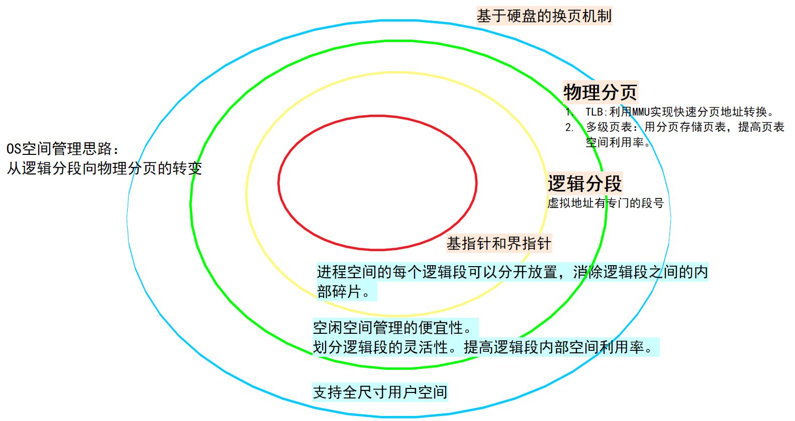

在地址映射缓存（TLB）管理上，即当TLB未命中时，有两种处理思路，一种是基于复杂指令集体系结构的硬件管理模式，代表有Intel的x86，另一种基于的是精简指令集体系结构，通过trap指令让OS处理的模式。
注意到这里更新TLB后的return-from-trap（假设由OS控制的TLB）和系统调用的区别，这里返回的是导致异常(TLB_MISS)的指令，而后者直接返回到下一条指令。


在早期系统中，内存资源紧张，换页策略成了影响系统性能的最重要决策之一，这种局面随着内存造价的降低而改观，所以只需要了解一下前人智慧。